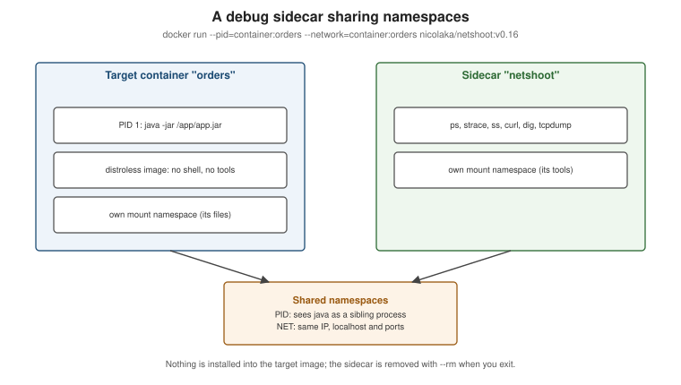

Debugging Containers
|
This content was generated with the assistance of AI and should be verified against the official documentation before being relied on in production. |
Most container problems are ordinary application problems seen through an extra layer of indirection. Chapter 8 of
Docker: Up & Running and chapter 10 of Learning Docker teach the same method — look at the process, the
network, the image history and the filesystem from the outside — and it still works. What has changed is the
tooling: docker exec and docker debug replace nsenter, and Go templates make docker inspect precise. This
page describes that toolbox for Docker Engine 29.8.x and Docker Desktop 4.91 or later, followed by a table of the
failures you will actually meet.
The toolbox, in the order you reach for it
raise --memory or fix the leak"] code -->|125 / 126 / 127| cmd["Wrong command, entrypoint
or permissions: check CMD/ENTRYPOINT"] code -->|other| logs["docker logs: application error"] r -->|Yes| h{"Healthy and reachable?"} h -->|Unhealthy| hc["docker inspect .State.Health.Log
run the probe by hand with exec"] h -->|Not reachable| net["docker port, network inspect,
netshoot sidecar on its network"] h -->|Slow or wrong output| inside["docker exec or docker debug:
inspect files, env, processes"] logs --> fix(["Fix, rebuild, re-run"]) oom --> fix cmd --> fix hc --> fix net --> fix inside --> fix
1. Logs
docker logs --tail 200 orders
docker logs -f --since 5m --timestamps ordersEverything the main process writes to stdout/stderr is here — provided the application logs to the console (see
Resources, Logging and Monitoring). Derived from
docker container logs.
2. Status and exit code
docker ps -a --filter name=orders --format 'table {{.Names}}\t{{.Status}}\t{{.Image}}'
docker inspect --format '{{.State.Status}} exit={{.State.ExitCode}} oom={{.State.OOMKilled}} error={{.State.Error}}' ordersThe exit codes are explained on
Running Containers: 137 is
SIGKILL (often the OOM killer), 143 is SIGTERM, 125-127 mean the command could not be started.
3. docker inspect with Go templates
docker inspect prints the full JSON for any object; --format extracts exactly what you need:
docker inspect --format '{{json .Config.Env}}' orders | jq .
docker inspect --format '{{range .Mounts}}{{.Type}} {{.Source}} -> {{.Destination}}{{"\n"}}{{end}}' orders
docker inspect --format '{{range $net, $cfg := .NetworkSettings.Networks}}{{$net}} {{$cfg.IPAddress}}{{"\n"}}{{end}}' orders
docker inspect --format '{{json .State.Health}}' orders | jq '.Log[-1]'
docker inspect --format '{{.Config.Entrypoint}} {{.Config.Cmd}} user={{.Config.User}}' orders-service:1.4.0Derived from docker inspect and
Format command and log output.
4. Get inside: docker exec
docker exec -it orders sh # a shell, if the image has one
docker exec orders env # the actual environment
docker exec -u 0 -it orders sh # as root, e.g. to install a tool temporarily
docker exec orders cat /proc/1/status | grep -E 'Name|VmRSS|Threads'Derived from docker container exec.
5. Images without a shell: docker debug
Distroless and hardened runtime images deliberately ship no shell, so docker exec -it … sh fails. docker debug
(bundled with Docker Desktop, free for all users) attaches a toolbox shell — with vim, curl, htop, strace
and an install command for more — to a running container or even to an image, without modifying it:
docker debug orders # a debug shell sharing the container's filesystem, processes and network
docker debug orders-service:1.4.0 # explore an image that has no shellDerived from docker debug.
6. Processes, filesystem changes, files and history
docker top orders -eo pid,ppid,user,rss,args # processes, with host PIDs
docker diff orders # files added (A), changed (C), deleted (D) since start
docker cp orders:/tmp/heapdump.hprof ./ # copy artifacts out -- works on stopped containers too
docker image history --no-trunc orders-service:1.4.0 # how each layer was produced
docker events --filter container=orders --since 30m # start, die, oom, health_status transitionsDerived from docker container top,
docker container diff and
docker system events.
Debug sidecars: sharing namespaces
When the tool you need is not in the image and docker debug is not available (for example on a server with plain
Docker Engine), start a second container that joins the target’s namespaces and brings its own tools:

# See and trace the target's processes (same PID namespace)
docker run --rm -it --pid=container:orders --cap-add SYS_PTRACE busybox:1.37 sh -c 'ps aux'
# Debug its network from inside (same network namespace: same IP, same localhost, same ports)
docker run --rm -it --network=container:orders nicolaka/netshoot:v0.16 \
sh -c 'ss -ltnp; curl -s localhost:8080/actuator/health; dig orders-db'Both books use nsenter (from util-linux, run on the host with the container’s PID) to enter a container’s
namespaces. That technique is historical: it needs root on the host and does not work on Docker Desktop, where the
containers live inside a VM. docker exec, docker debug and namespace-sharing sidecars replace it.
When the daemon is the problem
docker info # warnings at the bottom: no cgroup v2, storage driver issues, ...
journalctl -u docker.service --since "1 hour ago" # daemon logs on systemd Linux hosts
sudo dockerd --debug # run in the foreground with debug logging (stop the service first)Set "debug": true in /etc/docker/daemon.json and send SIGHUP to dockerd to switch debug logging on without a
restart. On Docker Desktop, use Troubleshoot > Gather diagnostics. Derived from
Read the daemon logs and
Troubleshooting the Docker daemon.
Common failures and fixes
| Symptom | Cause | Fix |
|---|---|---|
|
Another container or host process owns the host port. |
|
|
Your user is not in the |
Add the user to the group and log in again, use rootless mode, or |
|
Images, stopped containers, volumes and build cache filled |
|
Name resolution fails inside a container |
Container on the default bridge (no DNS by name), a host resolver on |
Use a user-defined network; set |
|
Image built for another architecture (for example |
Build a multi-platform image or pass |
Container exits with |
The process exceeded |
Raise the limit, or size the JVM with |
Health check stays |
The probe command is missing from the image ( |
Read |
Edits to bind-mounted files are not visible |
The application caches files, the editor replaced the file (new inode) under a single-file bind mount, or Desktop file sharing is not configured for that path. |
Bind-mount the directory rather than the file; check Settings > Resources > File sharing; consider Compose Watch. |
|
The process is not PID 1 in exec form, or ignores |
Use exec-form |
The error texts are those printed by Docker Engine 29 and are described across Troubleshooting the Docker daemon, Port publishing and mapping and Linux post-installation steps.